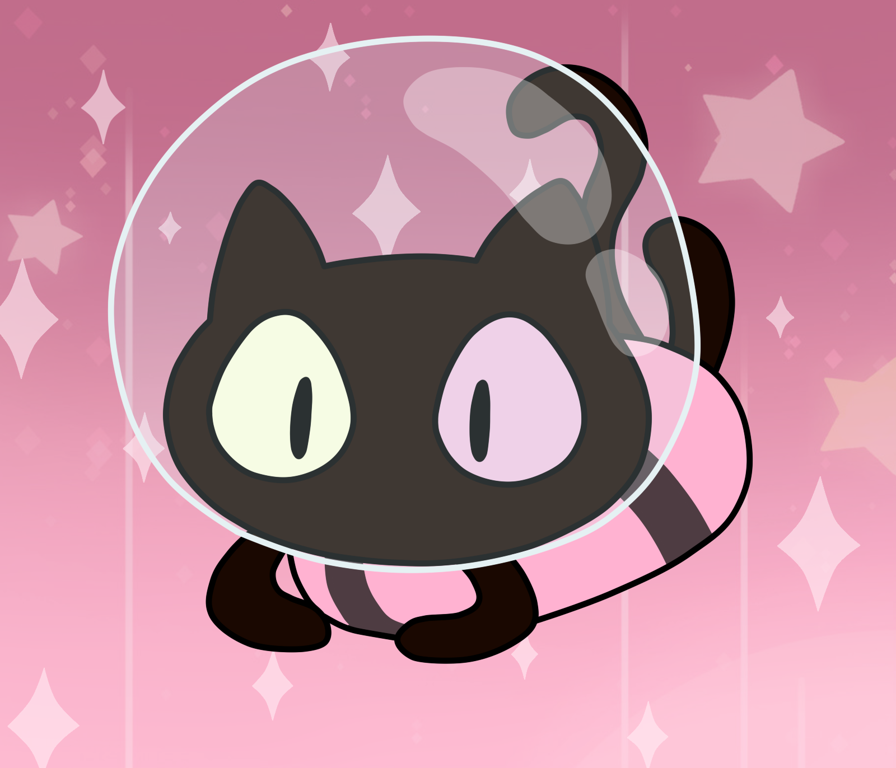

Vamos a preparar las “Gato Galletas” de Steven Universe,
de una forma muy especial ya que no solamente vamos a involucrarnos al
maravilloso mundo de Steven, si no que también,
vamos a improvisar un poco en esta receta.
☆- 1 barra de mantequilla a temperatura ambiente
☆- 3/4 tza de azúcar (150 gr)
☆- 2 tazas de harina de trigo (240 gr)
☆- 1 huevo
☆- 4 cdas de cacao en polvo (30 gr)
☆- 1 cucharada de esencia de vainilla
☆- 1 pizca de sal
☆- Helado de fresa y vainilla
☆- Cortador de galleta con forma de gato
Primero pon el helado de vainilla y el de fresa en papel encerado dentro de
un molde plano y acomoda 4 filas alternando los sabores.
Mete la mezcla en el congelador mínimo 3 horas.
Mezcla la mantequilla (Debe estar a temperatura ambiente)
con la azúcar y la sal hasta que se integren.
Agrega el huevo y la esencia de vainilla.
Luego pasa por un colador la harina y el cacao,
mezcla con una cuchara y cuando esté consistente sigue con tus manos.
Debe quedar como una masa.
Envuelve la masa en papel aluminio y metela a la heladera por 30 minutos.
Precalienta el horno a 180°C.
Espolvorea un poquito de harina en la mesa donde vas a amasar
y con un rodillo empieza a estirar, cuidando que nno quede muy gruesa ni muy fina.
Con el molde de gatito empieza a cortar las galletas.
Acomodalas en un molde plano con papel encerado,
con una boquilla de manga pastelera circular cortales los ojos
a la mitad de las galletitas y con un palito finito hazle puntitos alrrededor.
Metelas al horno a 180 C por 8 a 10 minutos.
Cuando el helado esté listo, sacalo y corta con el molde,
trata de que queden con los dos sabores y con un cuchillo cortales lo sobrante.
Luego arma las galletitas, pon una tapita que no tenga ojos abajo,
pon el helado y pon otra galletita que tenga ojitos. ¡Y listo!🐱
Autor: Yuumi✨